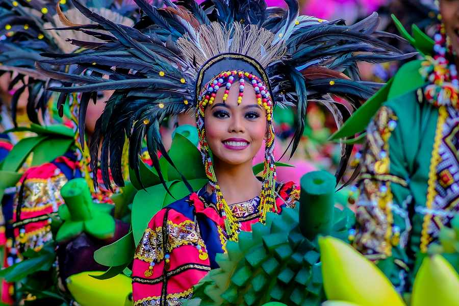

Kadayawan 2027 will take over Davao City for most of August, and the day nearly everyone plans around is the street parade. In the last two years that parade fell on the third Sunday of the month, which points to Sunday, 15 August 2027. The city usually releases its official calendar in July, though, and a later Sunday is still possible. So treat mid-August as your target, keep your bookings flexible, and fix your dates once the programme is out.
This guide is for people deciding now whether to go and how. It covers what the festival is, which events are worth building a trip around, the rules on parade day, where to sleep and how to handle a city that is busier in August than at any other time of the year.
A quick word on scale. Davao City set a target of 250,000 tourists for the 2026 edition, spread its programme across 26 official events and saw a record crowd of about 120,000 at the street dancing showdown. That is the kind of week you are walking into, so the earlier your room and flights are sorted, the calmer the trip.

What Kadayawan Celebrates
Kadayawan is Davao's thanksgiving festival. The name comes from madayaw, a local greeting that means good or beautiful, and the festival gives thanks for the harvest and honours the city's 11 indigenous and Moro tribes. You see this in the details: tribal leaders strike the ceremonial gong at the opening, each tribe has a role in the programme, and the dance contingents base their routines on harvest rituals, local legends and the instruments of their communities.
That gives Kadayawan a different feel from Sinulog or Dinagyang, which grew around the Santo Niño. Here the stars are fruit, flowers and the people who first lived on the land around Davao Gulf. August is also harvest time for the fruit Davao is known for, so the markets and fairs during festival month are at their fullest.
Kadayawan 2027 at a Glance
Kadayawan 2027 at a glance
- Where: Davao City, Mindanao
- When: most of August 2027, with the opening in the first or second week
- Parade day: expected Sunday, 15 August 2027 (the third Sunday), still to be confirmed by the city
- Main draws: Indak-Indak street dancing, the Pamulak floral float parade and the Hiyas sa Kadayawan pageant
- Cost to watch: the street events are free to watch
- Nearest airport: Francisco Bangoy International Airport, Davao City
The Events Worth Planning Around
The 2026 programme ran from 7 to 31 August, but the big events sat close together in the middle of the month. If 2027 follows that shape, you can catch most of the festival in a long weekend.
- Pamulak ug Indak-IndakThe parade day. Floral floats and street dancers fill the downtown route in the morning, followed by the dance showdown. In 2026 it started at 6 AM on Sunday, 16 August.
- Subang SinugdananThe opening, when the tribes arrive by boat and meet on land. It returned in 2026 on the first day of the festival.
- Hiyas sa KadayawanA cultural pageant where each candidate represents a tribe. The 2026 coronation night was three days before the parade.
- Sayaw and Agong ug KulintanganTraditional dance and gong music competitions. Quieter than the parade and a better look at the music itself.
- Trade fairs and bazaarsThe agri-trade fair, food truck bazaar and night markets run for days, so you can fit them around everything else.
- Arts, film and concertsShort film screenings, an arts week and free concerts, mostly in the days before the parade.
Which days to choose
Arrive on the Friday and leave on the Monday or Tuesday after the parade. In 2026 the three days before the parade held the gong music, the games and the concert, and Friday was made a special non-working day in the city. That is the best stretch of the festival for a short visit. If you have more time, come a few days earlier for the pageant and the dance competition, when the crowds are lighter and the hotels a little easier.
The parade route
Recent parades have run through downtown, around Roxas Avenue and the San Pedro area. In 2026 the dance showdown also moved for the first time to the Coastal Road at Tulip Drive, and the city has not said whether it stays there. Wait for the 2027 route map before you choose a viewing spot or book a hotel for its location.
Parade-Day Rules
Security is tight, and the rules are enforced. In 2026 the banned list included firearms, knives, alcohol, backpacks, umbrellas, lighters, toy guns and laser lights. A backpack is the one most visitors get caught with, so leave it at the hotel and carry a small pouch instead. Bring water in a clear bottle and a hat in place of an umbrella. Keep a valid ID on you too, as security checks at festival venues have asked for one in past years.
Roads along the route close early, and cars parked on them get towed. Walk or take a jeepney to somewhere near the route, and plan to walk the last stretch. The parade starts at dawn, so be in place before it starts if you want a spot near the front.
Davao's everyday rules also apply during the festival. The city has a public smoking ban and a ban on firecrackers, and it enforces speed limits on its roads. Smokers should look for the designated areas.
Getting to Davao
Flying in
Francisco Bangoy International Airport
Direct flights connect Davao with Manila, Cebu, Iloilo and other domestic cities. Fares climb quickly for the festival weekend, so book once the dates firm up.
Airport to the city
Taxi or ride-hailing
The airport is north of downtown. Davao taxis use the meter, and ride-hailing works in the city, but expect queues and slow traffic during festival week.
Overland in Mindanao
Buses into the city
Buses run to Davao from cities across Mindanao, including Cagayan de Oro, General Santos and Butuan. Leave early and allow extra time on the way in.
Where to Stay
Downtown, around San Pedro Street and Roxas Avenue, puts you closest to the parade and lets you walk there before sunrise. It is also the noisiest part of the city that week and the area most affected by road closures. Lanang, in the north near SM Lanang and the airport, is quieter and good for the trade fairs, but you will need a ride to the parade. Matina, in the south around SM City Davao, has many mid-range hotels and the Davao Global Township, where the free Lyvefest concerts were held in 2026.
Book as soon as you can. Ask the hotel how far it is on foot from the route, whether its street will be closed on parade day and whether the rate includes taxes. A room you can walk from beats a nicer one across town when the streets are shut.
What to Eat During Festival Month
Practical Tips Before You Go
Festival-week habits
- Watch for the July calendarThe city tourism office posts the official schedule in July. Book refundable rooms until then.
- Expect afternoon rainAugust is rainy, though mornings are often clear. Pack a light rain jacket, since umbrellas are banned near the parade.
- Carry small cashStalls and jeepneys want coins and small bills, and ATMs near the route get long lines over the weekend.
- Pick a meeting pointMobile signal slows in a crowd this size. Agree on a place to meet in case your group gets split up.
- Ask before close-up photosDancers in costume are usually happy to pose after their set. Ask first, and leave room for the marshals.
Adding More of Davao to Your Trip
Outside parade weekend, many of the side events run later in the day, which leaves mornings free for other trips. If this is your first time in the city, our guide for first-time visitors to Davao City covers the main sights and how to get around. For cooler air after the crowds, Eden Nature Park in the Toril highlands works as a half-day or full-day trip. Samal Island is a short boat ride across the gulf, and the bat cave, falls and sandbars of Samal are a good way to spend the day after the parade, when the city is clearing up.
Is Kadayawan 2027 Worth Planning Around?
Yes, if you like big street festivals and don't mind sharing the city with a few hundred thousand other people. The parade is one of the biggest in Mindanao, and the tribal programme gives it a story you won't see at the Santo Niño festivals. Travellers who dislike crowds can still go, but should come early in the month for the smaller events and leave before parade weekend. Either way, book your room now and set your final dates once the city releases the calendar.
Frequently Asked Questions
When is Kadayawan 2027?
The festival runs through most of August 2027. The parade is expected on Sunday, 15 August, the third Sunday of the month, but the city confirms its dates in July, so check the official calendar before you book anything non-refundable.
Is Kadayawan free to watch?
The street parade, the floral floats and many of the fairs are free. Some indoor shows and seated events may need tickets, which the organisers announce with the programme.
How many days should I spend in Davao?
Three to four nights covers the main weekend with a day spare for Samal or the highlands. Stay a week if you want the pageant, the dance competition and the parade.
Can I bring a bag to the parade?
Backpacks were banned on the 2026 parade route, along with umbrellas, alcohol and sharp objects. A small pouch and a clear water bottle are the safe choice.
Photo credit to Wikimedia Commons


Comments
No comments yet. Been here recently? Share a tip or ask a question.
Leave a Reply